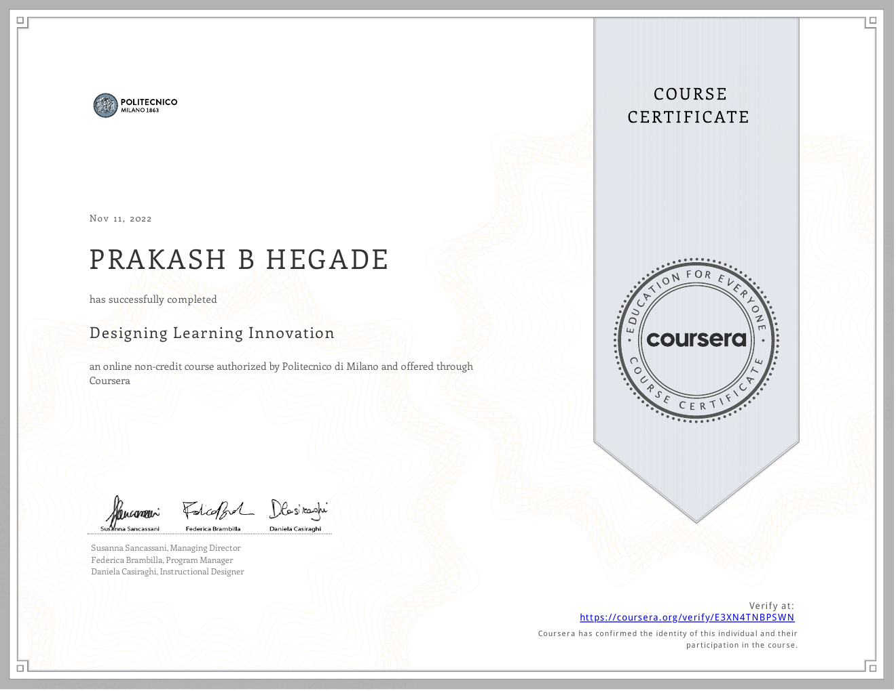
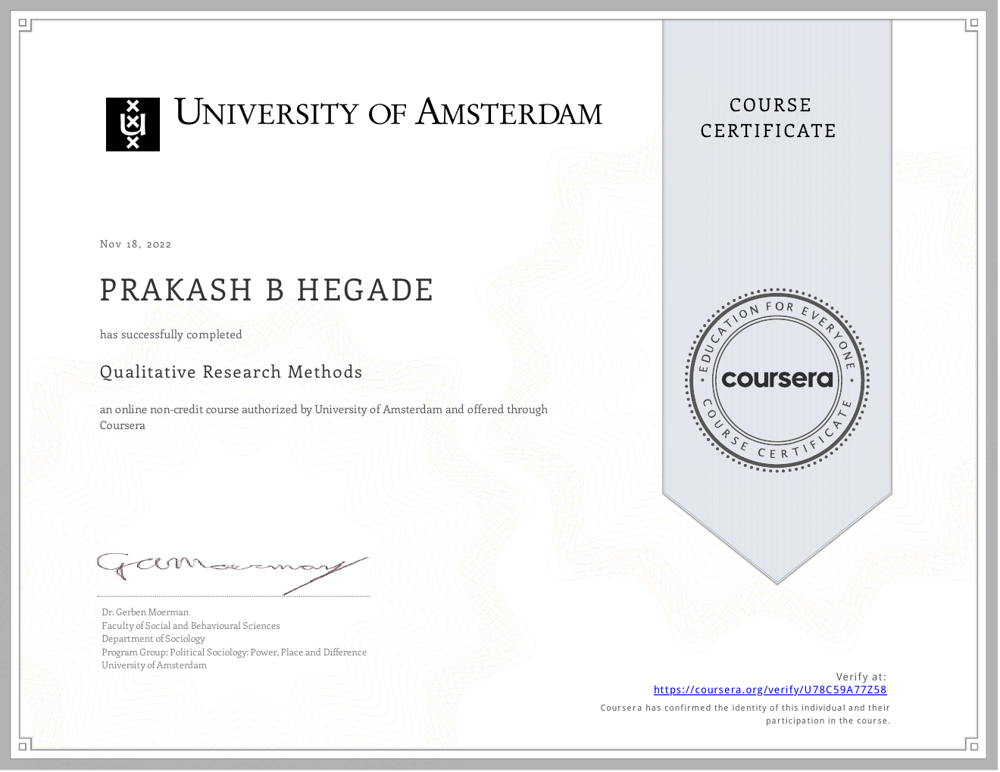
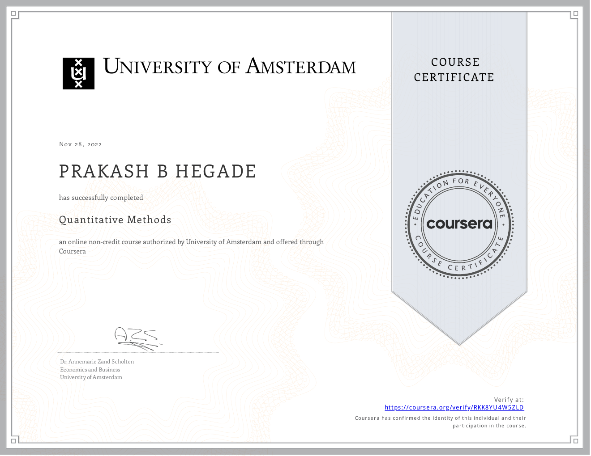

Learning and certification November 2022
Courses that strengthened the work
These first three certificates record learning in learning innovation and in both quantitative and qualitative research methods. Together, they sit alongside the classroom exploration and research design that shaped this study.

Designing Learning Innovation
Authorized by Politecnico di Milano and offered through Coursera. Online non-credit course.

Qualitative Research Methods
Authorized by the University of Amsterdam and offered through Coursera. Online non-credit course.

Quantitative Methods
Authorized by the University of Amsterdam and offered through Coursera. Online non-credit course.
Why these milestones matter. Learning innovation and research methods provided useful grounding for the teaching experiments and the later study. These certificates are one part of the wider learning, practice, and achievement connected to KNOT.
Additional learning 2020–2025
Learning that travelled into the research
These specializations and courses added to the work in different ways: by strengthening academic communication, attention to learning and cognition, and reflection on how AI and teaching meet. They supported the researcher's wider preparation; they are not presented as evidence for the study's findings.
Good with Words: Writing and Editing
Strengthened clear organisation, revision, and reader-focused writing for presenting a long research journey.
Creative Writing
Developed attention to structure, description, and revision that also supports accessible explanation of ideas and classroom experiences.
Mind and Machine
Connected ideas from cognitive science and computing, complementing the study's interest in how learners reason through problems.
Artificial Intelligence (AI) Education for Teachers
Added a focused perspective on instructional design, computational thinking, and the educational use of AI.
The Teacher and Social and Emotional Learning (SEL)
Explored social and emotional learning for students and teachers, broadening the perspective on the human dimensions of classroom experience.
English for Research Publication Purposes
Supported academic reading and writing for communicating research through papers and the final manuscript.
How they fit. These learning experiences contributed to the preparation behind the work. The classroom studies, source data, analysis, and conclusions remain grounded in the research process described in the chapters.
Research period 2021–2024
Experiences that supported the work
Alongside classroom practice and data collection, these research experiences, programmes, and certifications helped build a stronger grounding in educational research and problem-based learning.
Research Scholar
Anurag University · Full-time · On-site · Hyderabad, Telangana, India
A qualitative research project to understand teaching and learning aspects of programming in computer science.
PBL Pedagogical Development Certificate Program
Aalborg University · Problem-Based Learning
Built a deeper understanding of PBL pedagogy and its design principles, supporting the development and refinement of the KNOT approach.
Qualitative Research for Community Upliftment
NITTTR Chennai
Added grounding in qualitative inquiry relevant to understanding teaching and learning in context.
IUCEE International Engineering Educator Certification Program
Indo Universal Collaboration for Engineering Education (IUCEE)
Supported continued development in engineering education and learner-centred teaching.
Nurturing Researcher-Pro Mindset in Self
Indo Universal Collaboration for Engineering Education (IUCEE)
Encouraged a reflective and inquiry-oriented approach to professional and educational practice.
Transformative Education for Sustainable Social Impact (TESSI) Program
Lehigh University
Extended the work's connection to education, design, and meaningful social impact.
A connected period of growth. These experiences contributed to the researcher's preparation while the classroom work was taking shape. They sit alongside the study's own evidence and are not substitutes for it.
Sharing practice Faculty development
Helping faculty design case studies
During the research period, I conducted more than ten Faculty Development Programmes on designing case studies for teaching. These sessions reached faculty through the Malaviya Mission Teacher Training Programme (MMTTP) and universities across India, creating space to work through how a concept can become a meaningful case for student inquiry.
From classroom practice to faculty development. The sessions brought the work of designing problems and cases into conversation with other teachers. The aim was to help faculty move from a topic to a case that invites students to interpret, question, and apply ideas.
Design of Effective Case Studies and Reflections Using AI for Higher-Order Skills
Prakash Hegade and Ashok Shettar · Journal of Engineering Education Transformations, 39 (Special Issue 2), 40–47
The paper presents an approach to AI-supported case-study design grounded in threshold concepts. It describes how identifying what learners know, what they find difficult, and where concepts apply can guide the creation of cases and reflections aimed at higher-order thinking.
Teaching beyond the classroom GURUSETU
Video contributions for GURUSETU
I also recorded video lessons for GURUSETU, a national faculty-development initiative funded by the Ministry of Education, Government of India. The initiative shares short, structured learning modules with higher-education faculty.
Teaching and Learning Pedagogies
GURUSETU · Ministry of Education, Government of India initiative
I recorded videos on teaching and learning pedagogies for the GURUSETU faculty-development initiative. These contributions extend the researcher's classroom and faculty-development experience to educators beyond the institution.
Why this belongs here. The faculty-development sessions and recorded lessons carried the researcher's experience into conversations with other educators, extending the work from designing one course to helping others think about their own teaching.
What grows next A book for teachers
KNOTTY CLASS
A practical guide to teaching with KNOT. KNOTTY CLASS will help teachers design classroom experiences, lesson plans, and assessments rooted in the KNOT philosophy. It will translate the research into simple, usable guidance for shaping meaningful problems, supporting student thinking, noticing learning, and helping understanding travel into what comes next.